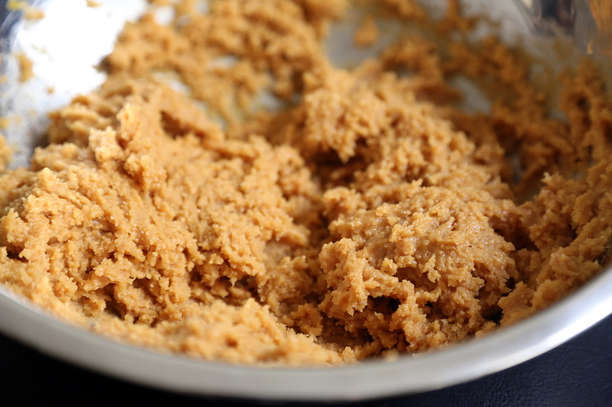
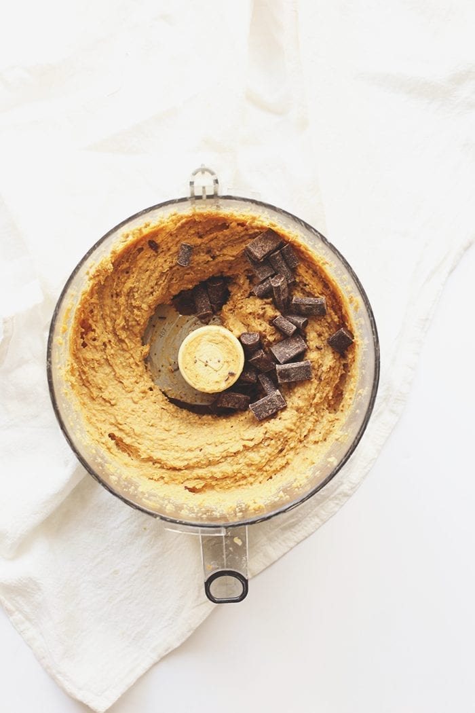
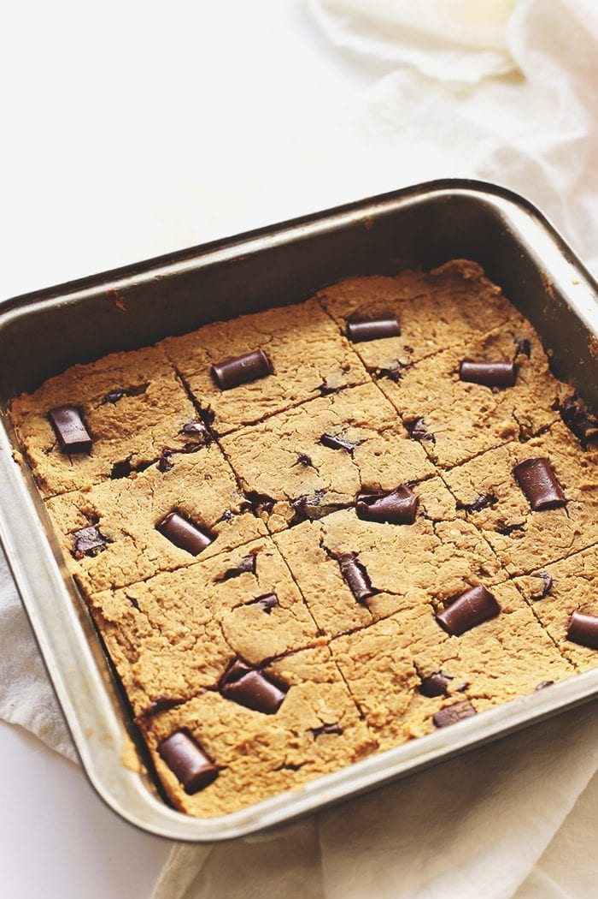
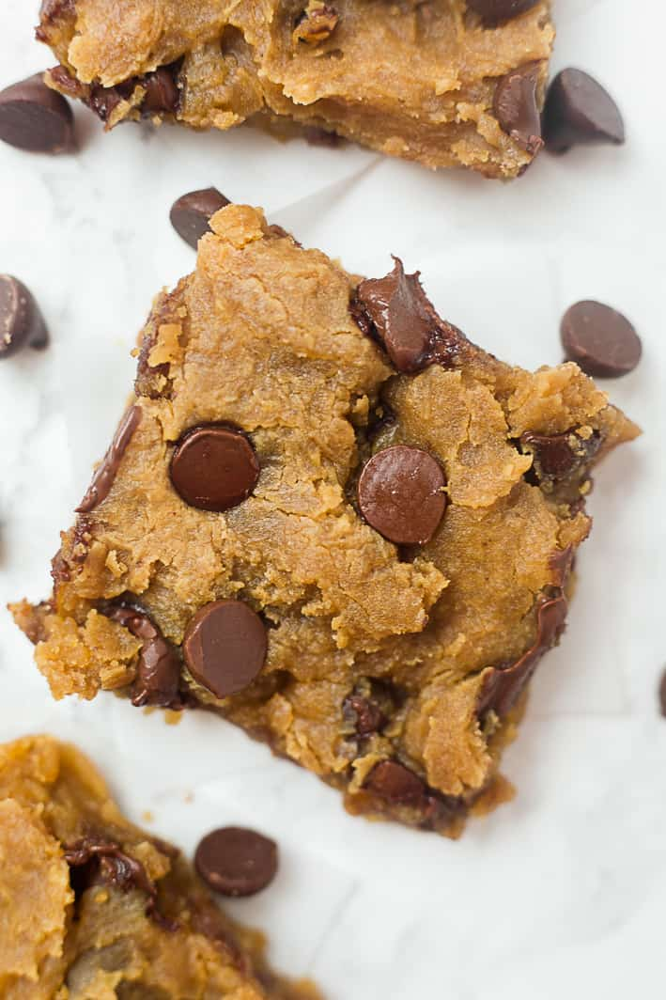

Ingredients
- Cooking Spray
- 1 can of chickpeas
- 1/2 cup all natural peanut butter or almond butter
- 1/3 cup pure maple syrup or agave nectar
- 2 teaspoons vanilla
- 1/2 tsp salt
- 1/4 teaspoon baking powder
- 1/4 teaspoon baking soda
- 1/3 cup vegan (or regular) chocolate chips


Instructions:
Step 1
Preheat oven to 350 degrees F and spray an 8x8 pan with cooking spray
Step 2
In a food processor, add all ingredients except chocolate chips and process until batter is smooth.

Step 3
Fold in 1/3 cup of chocolate chip. Note: Batter will be thick and super delicious, so you could actually just eat it on it's own!

Step 4
Spread batter evenly in prepared pan then sprinkle 2 tablespoons of chocolate chips on top.
Step 5
Bake for 20-25 minutes or until toothpick comes out clean and edges are a tiny bit brown. The batter may look underdone, but you don't want them to dry out!

Step 6
Cool pan for 20 minutes on wire rack. Sprinkle with sea salt then cut into squares. Makes 16 blondies. Store covered in the fridge for up to 3-5 days.
